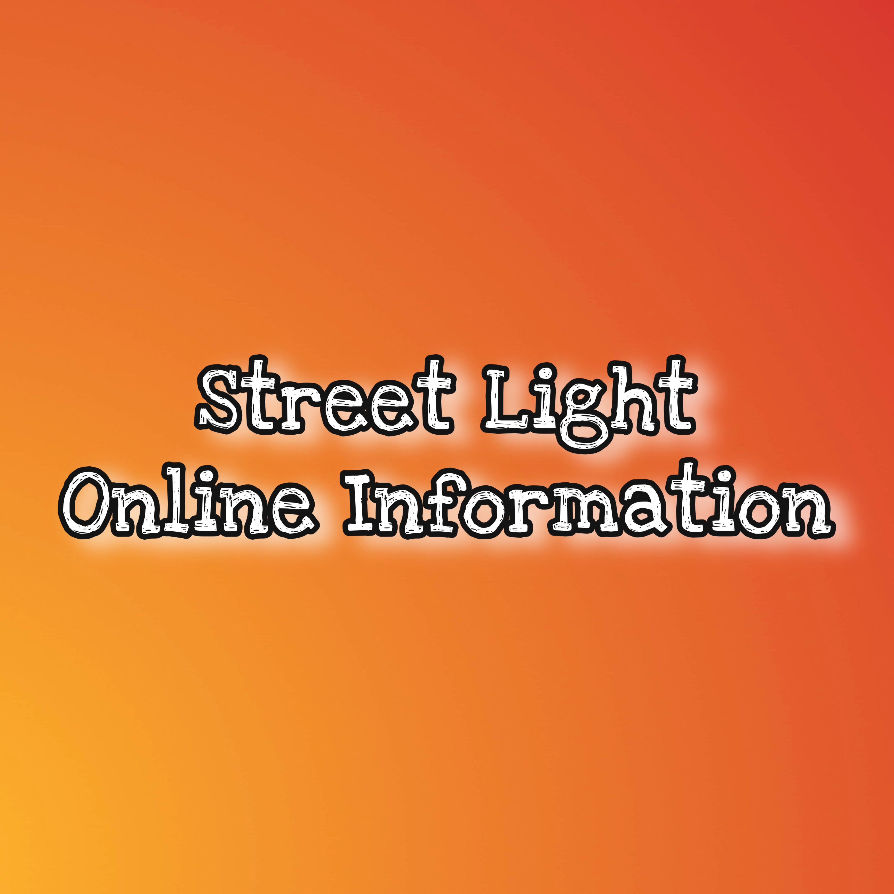
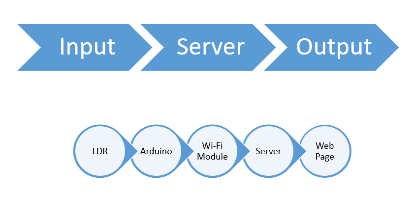
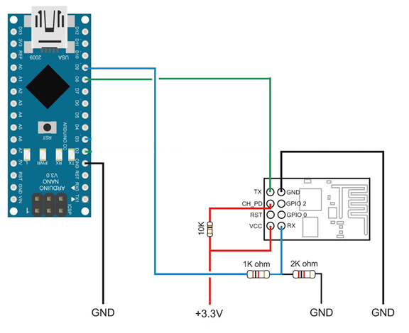
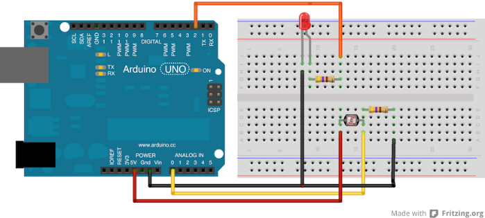

Street Light Online Information
- Category: Arduino
- Project date: April, 2017
- Project Report: View Report
Project Summary:
My Project is Divide In Three Part:- Input Reading
- Server
- Webpage Output
Scope:
- The Most advantage is that it will help to save electricity.
- Any unknown person can see the street light is on or off with the help of webpage.
- Main source of the management can turn off and on the light of any street.
- Whole system will work automatically so it reduces the human work.
Objective:
- 1. Input Reading: I can take input reading from the LDR Sensor, In Arduino changed input to Output With using the Programming. Then after Output send threw Wi-Fi module
- 2. In Server: In Server Program Output can be saved. Then after send a data to browser.
- 3. Webpage Output: On webpage I can display Street light Position and on/off Situation.
- 4. Procedure: First, LDR sensor takes input data then inputted data convert into output by Arduino CKT after that output data can transfer into ESP Wi-Fi Module. This data is send to a Server by Wi-Fi Module. After receiving data stored in server , that data show in browser using webpage.
Tools and Technology used:
Hardware:- Arduino nano
- LDR
- ESP-8266
- Bread-board
- Wires
- Register
- Arduino coding
Project Flow:

Project Flow
- Provides a functionality of sensor –based on street light.
- With the help of webpage we can on or off the street light.
- Can be considered as an updation for switch board technology.
- It can be used in many companies.
- It also used in cities street.
- We have use arduino for coding and ESP 8266 module in my project.
- Then we upload our project in Arduino.
- Then we run our project.
Snapshot of project:
1. Wifi module circuit:

Wifi Module

Arduino circuit
- It is a theoretical circuit and may require few changes in practical implementation.
- It is very expansive.
- The Most advantage is that it will help to save electricity.
- Any unknown person can see the street light is on or off with the help of webpage.
- Main source of the management can turn off and on the light of any street.
- Whole system will work automatically so it reduces the human work.
- For the betterment of the country we can use this project in very well manner and it can also save the electricity.
Conclusion:
Finally, From this project, I have learned how to use Arduino hardware & software, many things like how to deal with server and I have learned embedded working from this project.